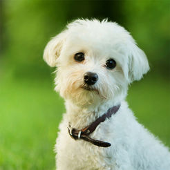
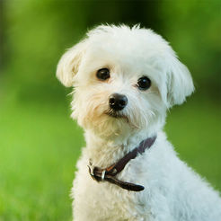

Everyone deserves to be happy, so thats why we will discuss the many different ways to keep your dog as happy as it can be.
Pools: Dogs love to swim, so why not give them a special kiddie pool that’s all their own? Put some water-friendly dog toys in there so they know that’s a special place they can go to cool off whenever they want.
Windows: Your dog has responsibilities, mainly to look, hear and smell. Keeping the windows open while you’re gone ensures that your pup can stay stimulated. Just make sure you have secure screens on your windows if your pup is more likely to hop out.
Toys/Destroy toys: Dogs need to exercise their animal instincts and destroying toys helps them stay sharp. They also just really enjoy playing "rough".
Hide and Seek: It's good that dogs keep their animal instincts in tact, and hide and seek helps them with their tracking skills. Plus, it's a fun game that both the dog and the owner will enjoy. Just make sure your dog knows how to stay still so you can hide from it.
Compliments: Dogs thrive on positivity and compliments, so be sure to let your pup know each and every time they are doing something that makes you smile. It may just motivate them to do it again.